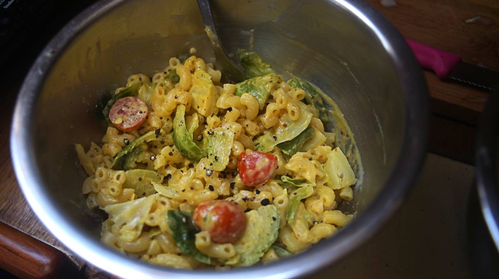

mac and faux cheese
2 servings — 15 minutes
Meals with faux-cheese doesn't always have to include nutritional yeast. We love nutritional yeast, but it's not cheap to buy, so we use it sparingly. Mixing a few other simple ingredients together we find is enough to make a good and satisfying cheesy sauce.
In the above image, we added brussel sprouts. It's not part of the recipe because it is a strange ingredient to add to mac and cheese, but we like it in everything. Whenever we cook rice, or pasta, we add halved and stemmed brussel sprouts(with the outer leaves removed) to the cooking water. If you like boiled brussel sprouts, give it a shot.
Substitutions
Plant milk: If you don't like soy milk, any non-dairy milk will do. We've had mac and cheese with full-fat coconut milk and it was heavenly. Coconut milk alters the flavor of the faux-cheese in a very good way.
Miso: We always have miso on the boat, and we use whatever kind we happen to have. We've made the mixture with white and red miso. The red miso has a stronger, deeper taste.
Turmeric: turmeric is an optional ingredient, but it gives the sauce a pop of colour and it is very good for you. It's possible to use fresh turmeric, 10 g (1 tsp) of dried turmeric is equal to roughly 15g (1 tbsp) of fresh turmeric.
 tahini35 g
tahini35 g garlic powder1.5 g
garlic powder1.5 g ground turmeric1.5 g
ground turmeric1.5 g miso10 g
miso10 g dijon mustard5 g
dijon mustard5 g soy milk125 ml
soy milk125 ml olive oil15 ml
olive oil15 ml yellow onion1, diced
yellow onion1, diced jalapeno peppers1
jalapeno peppers1 small heirloom tomatoes4 per bowl
small heirloom tomatoes4 per bowl whole wheat flour115 g
whole wheat flour115 g
sauce
- In a small bowl, add i>35 g (2 tbsp) of tahini, 1.5 g (1/2 tsp) of turmeric powder(dry), 1.5 g (1/2 tsp) of garlic powder, 10 g (1 tsp) of white miso, 5 g (1 tsp) of dijon mustard (see to make your own mustard). Add 125 ml (1/2 cup) of soy milk gradually, the mixture should be runny, but not watery.
- Heat a pan at medium heat, add some olive oil. When the oil is hot, add 1 small diced yellow onion and cook until browned, then add 1 fresh jalapeno pepper and cook for an additional 5 minutes. Set aside.
- Cook 115 g (1 cup, or 4 oz) of macaroni (elbow) pasta until tender. Drain the noodles and return to the pot. Mix in the faux-cheese sauce, until all the ingredients are well-coated, top with the yellow onion and jalapeno mix, some fresh cherry tomatoes, and season with a pinch of salt and black pepper.